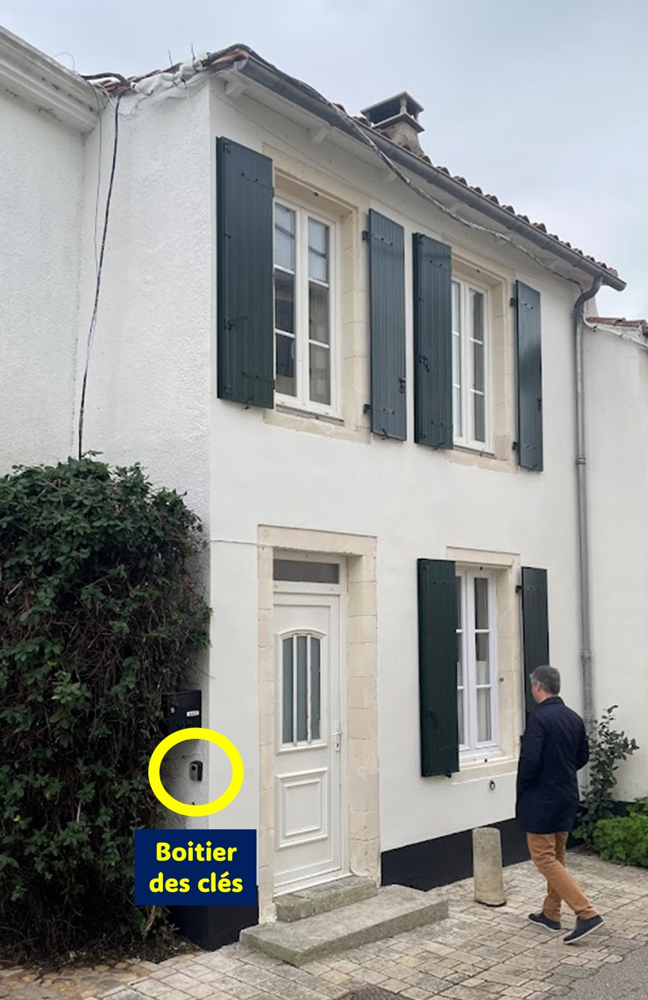
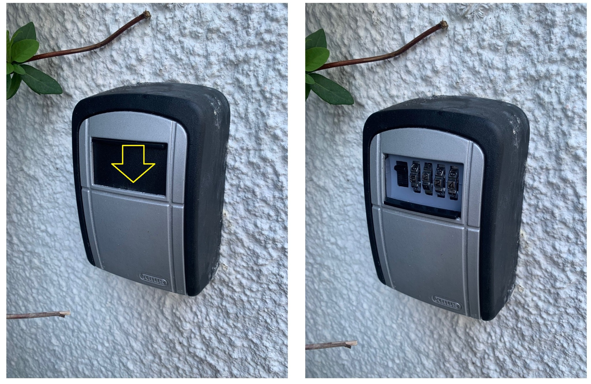
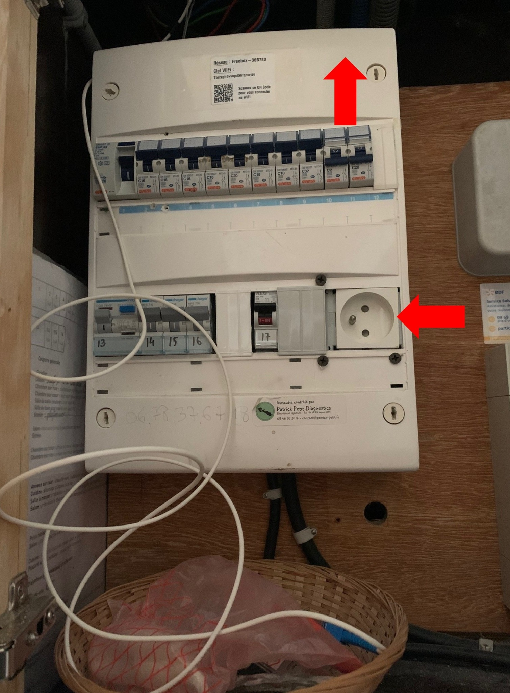
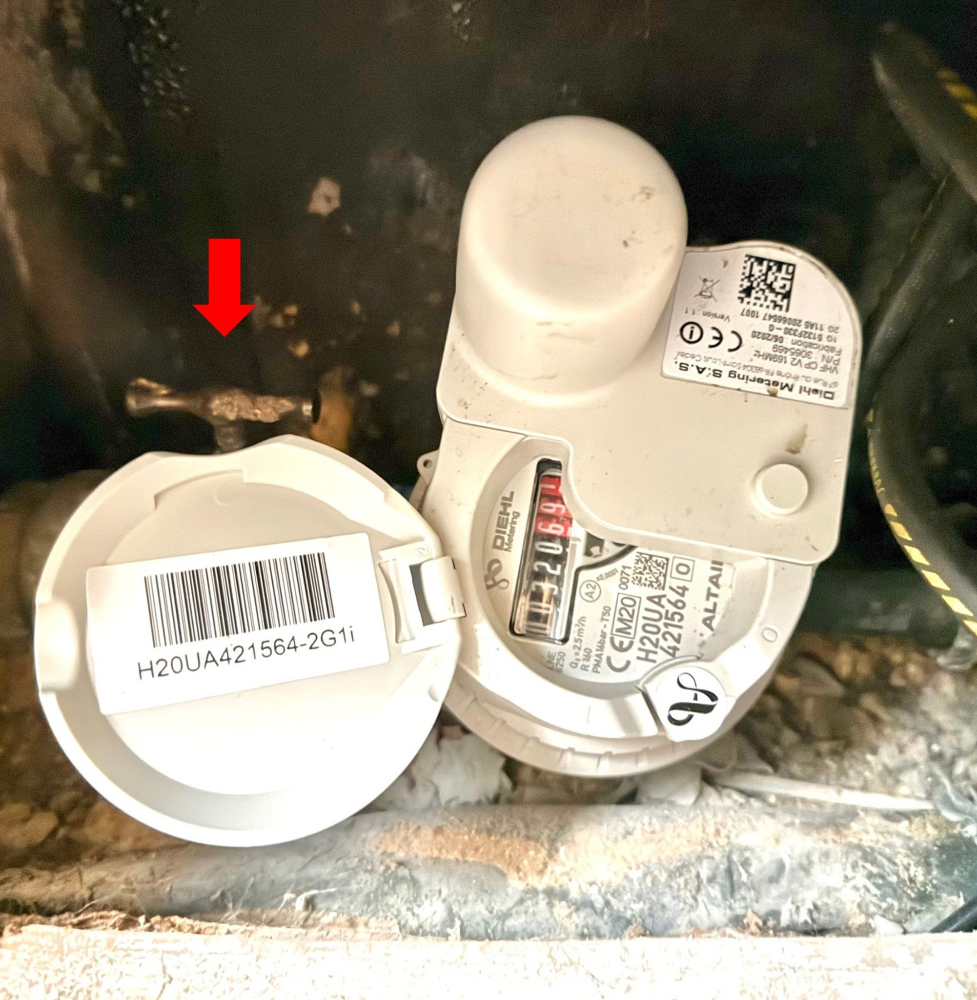
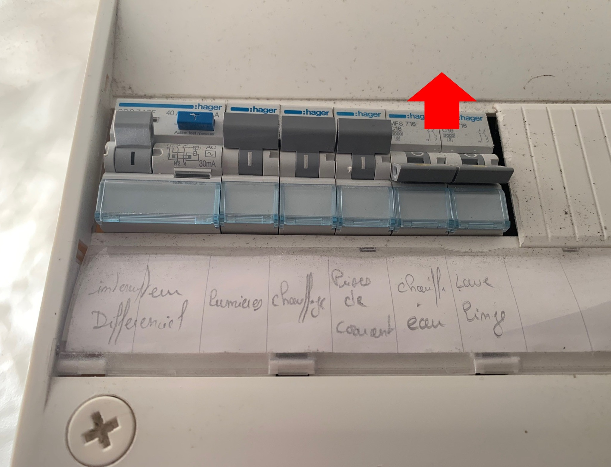

Bienvenue
Bienvenue au Clos de Léon !
Vous trouverez ci-dessous les informations pour ouvrir la maison.
Récupérer les clés
Le boîtier à clés se trouve à gauche de la porte d’entrée, sous la boîte aux lettres.

Abaissez le clapet, composez le code communiqué avant votre arrivée, récupérez les clés puis refermez le boîtier.

Mettre en service le chauffe-eau de la maison
Dans le sas d’entrée, accédez au compteur dans le placard situé sur le mur de gauche en entrant ;
Enclenchez les deux interrupteurs qui commandent le chauffe-eau de la maison ;
Branchez la freebox à la prise en bas du compteur.

Ouvrir l’arrivée d’eau
Dans le sas d’entrée, accédez à la trappe au sol qui cache l’arrivée d’eau ;
Tournez le robinet d’eau situé à gauche du compteur.

Mettre en service le chauffe-eau de la chambre de la cour
Dans la chambre située au fond de la cour, accédez au compteur dans les toilettes ;
Enclenchez les deux interrupteurs qui commandent le chauffe-eau de la chambre.

Renseignements pratiques
Solarium
Les coussins de l’assise du solarium sont dans la chambre au fond de la cour, y compris sous le lit.
Draps et serviettes
Les draps, les serviettes et les tapis de douche sont dans le placard de la chambre du premier étage sur cour, derrière la porte.
Repères pour les draps
- Draps bleus : lits simples.
- Draps gris : grands lits.
- Drap-housse blanc : lit de la chambre du rez-de-chaussée.
Vélos
Les clés des antivols des vélos sont sur les consoles du salon. Les vélos s’attachent aux anneaux de la façade de la maison.
Linge
Le lave-linge et les étendoirs sont sous l’escalier.